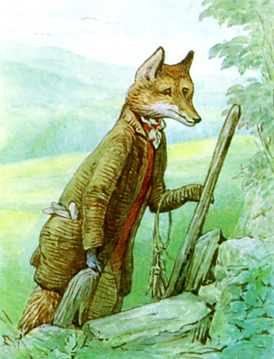
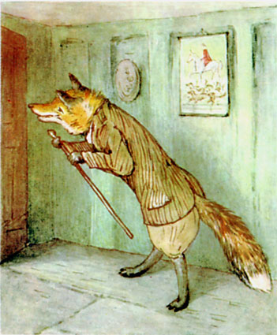
ゆくゆくは ウルヴァの あるじとなる フランシス・ウィリアムへ
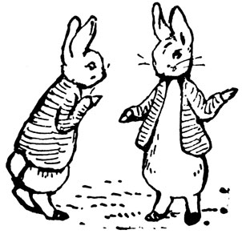
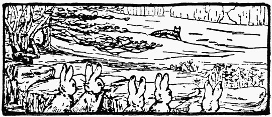
わたくし これまでたくさん 本を 書いてきましたが、 おぎょうぎのいい みなさんのお話ばかり。 ですからたまには いけすかない おふたりさんの ものがたりを しようと思います。 お名前は、 あなぐまトミーと きつねめさん。
きつねめさんを だれも「すてき」と ほめません。 ウサギたちの きらわれものです。 おかげで １キロくらい はなれていても においが わかるくらい。 いつも きつねひげで あたりを うろつく、 行く先なんて だれにも さっぱり。
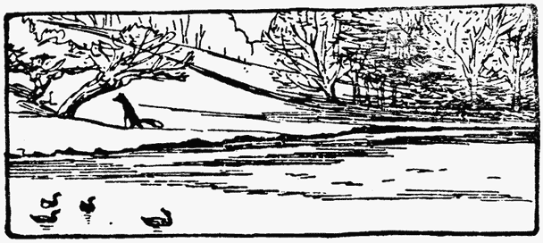
ある日の すまいは ぞうき林の えだごや、 そのせいで ぴょんぴょんベンジャミンじいさんの 家ぞくは びくびくもの。 つぎの日には みずうみのほとり ずんぎりやなぎに お引っこし、 マガモも ビーバーも ぶるぶるもの。
冬や 春先、 見かけるのは たいてい 土のなか、 おうし土手のてっぺん 岩場のところ、 つまり むぎむぎいわおの ふもと。
そもそも ６つ おうちが あるわけですが、 家に いることは あまりなく。
また そのおうちにしても いつも るすというわけでも なく。 きつねさんが 出かけているとき たまに あなぐまトミーが もぐりこんでいたり するのです（ことわりも なしに）。
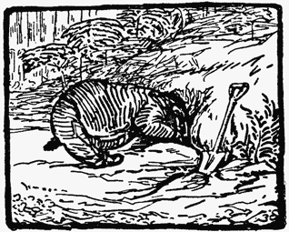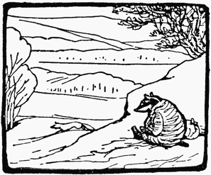
あなぐまトミー、 こいつは ずんぐり ごわごわ よたよた にやにや。 いつも まんめんの えみ。 あまり すてきな くせとは いえません。 ハチのすや カエル ミミズを 食べて、 月あかりのもと あたりを うろついては ものを ほりだします。
めしものは きたない、 お昼ねのときにも いつも くつを はいたまま ベッドに 入る、 しかも もぐりこむ ねどこは だいたい きつねめさんの ものでした。
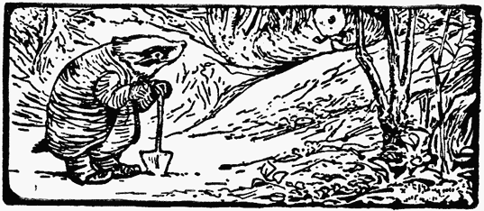
ところで この あなぐまトミー、 たまに ウサギパイを 食べるのです。 とはいえ ほんの 子ウサギのものを たまにだけで、 ほんとに 食べものが ほかに ないときだけ。 ぴょんぴょんじいさんとは 気が合うみたいで、 ふたりとも いじわるカワウソや きつねめさんが きらいなのだとか。 えんえん わる口を 言い合うことも しばしば。
ぴょんぴょんじいさんは もう だいぶ おとし。 穴を 出たところ えりまきまいて 春の日なたぼっこ。 ウサギたばこを パイプで ふかしていました。
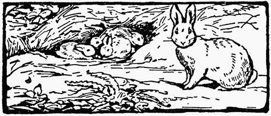
ひとつやねを ともにするのは むすこの ばにばにベンジャミンと むすこのよめ フロプシー、 ふたりは 子どもを もったばかりです。 ぴょんぴょんじいさんは ある日の午後 子どもの めんどうを 見ることに なっていました。 ベンジャミンと フロプシーが お出かけしたからです。
生まれたばかりの 子ウサギたちは 青い目を ぱちくり 足を じたばたさせるので せいいっぱい。 子ウサギの ねどこは ウサギの毛と ほし草で ふっかふか、 おもやの 穴とは またべつの あさい穴に なっていました。 ところが なんと ―― ぴょんぴょんじいさんは そのことを どわすれしたのです。

日なたぼっこしながら 森を 通りがかった あなぐまトミーと ねつの こもった おしゃべり。 トミーは ふだん 穴ほりや モグラ取りに つかう ふくろも スコップも わきに おいて、 キジの たまごが 足りないと ぶつくさ ぐちり、 きつねめさんが かすめとっていると とがめます。 しかも 自分が 冬みんしている すきに カワウソが カエルを 食べつくしたとかで ――「この ２週間 わしゃ ろくなもんに ありつけとらん。 イモなんかで 食いつないどる。 こうなったら ベジタリアンにでも なって 自分の しっぽでも かじるしかないわいな！」と あなぐまトミー。
おふさげでも ないのに、 へんに ぴょんぴょんじいさんの つぼに 入ってしまって。 あなぐまトミーが あんまり ずんぐりむっくり にやけ顔だったもので。
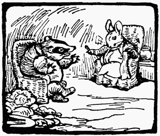
ですから わらいながら ぴょんぴょんじいさんは あなぐまトミーを 引き入れます。 まあ なかに 入って パウンドケーキを １まい、 あと 「むすめの フロプシーが こしらえた カウスリップの おさけでも １ぱい」 口に しないかと すすめました。 あなぐまトミーは うきうき ウサギ穴に からだを ねじこみます。
そのあと ぴょんぴょんじいさんは パイプを もう１ぷく、 あなぐまトミーには キャベツの 葉まきを さしあげました。 これが かなり きついものだったので、 あなぐまトミーの にやけ顔が さらに ひどくなりまして。 しかも 穴じゅう けむりまみれ。 むせながら わらう ぴょんぴょんじいさんに、 ふかしながら にやにやする あなぐまトミー。
こうして ぴょんぴょんじいさんは むせわらううちに キャベツの けむりで 目も あけていられなくなって ……
するうち おうちに 帰ってくる フロプシーと ベンジャミン ―― ぴょんぴょんじいさんも 目を さまします。 すると あなぐまトミーも 子どもたちの すがたも ないではありませんか！
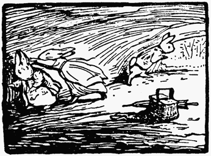
ウサギ穴に だれか まねき入れたことを がんとして うちあけない ぴょんぴょんじいさん。 ところが アナグマの においは かくしきれませんし、 土には 丸々とした 足あとが ぐっと ついていました。 ふざけるな という 話で。 耳を かきむしりながら フロプシーは あいてを しばきたおします。
ばにばにベンジャミンは すぐさま とび出て あなぐまトミーを おいかけました。
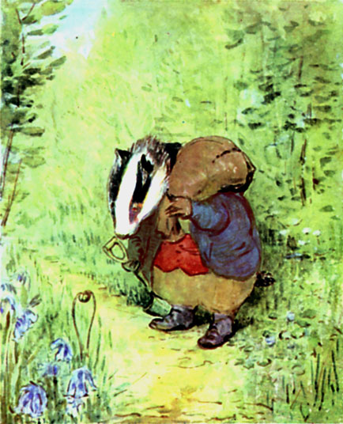
あとを たどるのは なんなく できます。 足あとも のこってましたし、 あいての 歩みも 森の うねうね 小道を のろのろするだけでしたし。 こっちには コケや カタバミを むしりとった あと。 あっちには ドクムギを ごっそり ほりかえした あと。 それから モグラ取りの わな。 みちみち 小川も ありました。 ベンジャミンは 足を ぬらさないよう かろやかに ぴょんと とびこえます。 アナグマの 足あとは どろにも くっきり はっきり ついていました。
小道の 先は ぞうき林の かたすみ、 木が 切りひらかれた ところです。 あるのは 葉っぱの 多い オークの 切りかぶと、 いちめんの 青い ヒヤシンス ―― においが して ベンジャミンは 足を とめますが、 お花の せいでは ありません！
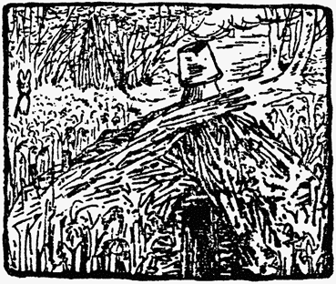
きつねめさんの えだごやが 目の前に。 しかも ちょうど ご本人が ございたく。 そのしるしに キツネくさいですし、 それどころか ―― えんとつ がわりの 穴あきバケツから けむりが もくもく。
ばにばにベンジャミンは 前足を あげて にらみつけ ひげを ぴくぴく。 えだごやの なかでは だれかが おさらを おとしたみたいで、 なにやら 言っています。 ベンジャミンは 足ぶみして、 びゅーん。
そのまま 足を とめずに 森の はしまで やってきました。 どうも あなぐまトミーも おなじほうへ むかったようです。 石がきの てっぺんに またもや アナグマの 足あと。 そして ふくろから ほつれた 糸が ちらほら イバラに 引っかかっていました。
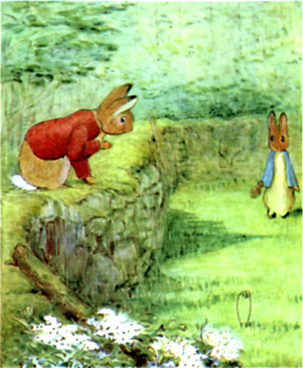
ベンジャミンは 石がきを のりこえ むこうの 野原へ。 しかけたばかりの モグラわなが またひとつ 見つかりました。 この先に あなぐまトミーが いるのは たしかです。 日ぐれも 近く、 夜風を たのしもうと ウサギのみんなも だんだんと 外に 出てきました。 なかでも 青い うわぎを きた ウサギが ひとりで いそいそ タンポポさがしを していて ――「いとこの ピーター！ あなうさピーター、 あなうさピーターか！」と 声を はる ばにばにベンジャミン。
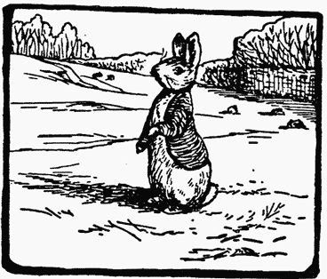
青い うわぎの アナウサギは 前足を あげて 耳を ぴん ――「いったい 何ごとだよ、 ベンジャミン。 ネコ？ それとも 白イタチの なつあかジョン？」
「ちがう ちがう！ やつが、 オレの 子どもを みんな くすねたんだ ―― あなぐまトミーが ―― ふくろに つめて ―― 見なかったか？」
「あなぐまトミー？ ベンジャミン、 子どもを みんなって？」
「７ひきだよ、 ピーター。 ななつごなんだ！ あいつ、 この先に 行ったんだよな？ たのむ 早く 教えてくれ！」
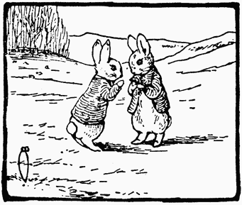
「来、 来たよ。 まだ １０分と たってない …… なかみは イモ虫だって 言ってたけど。 そういえば やけに 足が じたばたしてたな、 イモ虫にしては。」
「どっちだ？ どっちに 行った？ なあ ピーター！」
「なかに 生きものの 入った ふくろを 持ってて、 見てる 前で モグラの わなをしかけてたな。 わかったから ベンジャミン、 そもそも どういうことなんだ？」
ベンジャミンから かくかくしかじか。
「なるほど あの おじさんも としだから ついに もうろくが ひどいのか。」と ピーターも しみじみ。「でも 風向きは まだ わるくない。 足じたばたって ことは 子どもは 生きてるって ことだし、 あなぐまトミーも はらごしらえしたばかり。 たぶん これから ひとねむりするから みんな 朝ごはんに おあずけのはず。」
「どっちなんだよ。」
「ベンジャミン おちつけって。 やつの 行き先なんて ぼくには まるわかりだ。 きつねめさんが えだごやに ございたくなら、 やつは きつねめさんの もうひとつの おうち、 おうし土手のてっぺんに 行ったんだ。 たぶん そうだよ。 だって やつは カトンテルねえさんの うちに ことづてしてくれるって、 ちょうど 通りがかったときに 言われたからね。」（カトンテルは 黒ウサギと むすばれて おかの上に うつりすんでいました。）
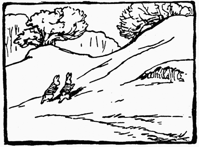
ピーターは つんだ タンポポを しまって、 うちひしがれた ベンジャミンに つきそいます。 親としては もう 気が気で ありません。 ふたりは いくつか 野原を こえたあと おかを のぼりだしました。 あなぐまトミーの のこした あとは はっきりしています。 どうやら １０メートルごとに ふくろを おろして ひと休みしていたようで。
「つまり いきが 上がってたんだな。 においからすると あとは すぐそこだ。 それにしても くさい！」と ピーター。
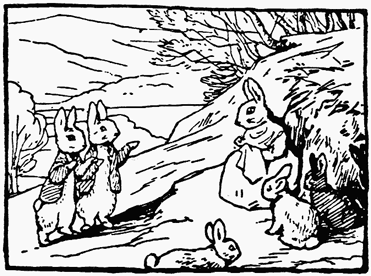
日ざしは まだ ぽかぽか、 おかの まきばに さしこんでいます。 おかの なかほど、 戸口に こしを おろしている カトンテル、 かたわら 育ちざかりの 子ウサギが ４、５ひき はしゃぎまわっていました。 ひとりだけが 黒で、 あとは みんな 毛が 茶色です。
カトンテルは あなぐまトミーが 通りがかるのを 遠くから 見ていました。 だんなさんは ございたくかと あいさつされると、 そういえば 見えなくなるまでに ２回 あなぐまトミーは ひと休みしたとの話で。
あいては こうべを たれると ふくろを ゆびさして、 みを よじるほど わらったとかで。 ――「行こう ピーター。 やつは そのうち 火を 入れ出すぞ。 いそげ！」と 言うのは ばにばにベンジャミン。
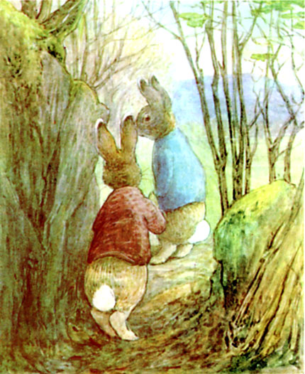
ふたりして おかの上へ 上へ。 ――「うちに いたよな。 穴から 黒い 耳が のぞいてたし。」「住まいが 岩場に 近いんだ。 おとなりさんとは もめたくないんだよ。 まあ 行こう、 ベンジャミン。」
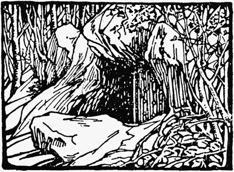
おうし土手の てっぺんにある 森近くまで 来た ふたりは、 気を とがらせます。 木々の おいしげる ごつごつした 岩場。 そして 見えてくる、 いわおの下、 きつねめさんの こしらえた おうちの ひとつ。 土手の 坂を のぼりきったところに あって、 岩やら 枝やらに おおわれています。 ウサギたちは こっそり しのびより、 耳を すまして 目を こらしました。
このおうちは、 ほら穴と ろうやと あばらやを 足して ３で わったみたいな ものでした。 がんじょうな ドアが かたく とざされています。
夕やけに てらされた まどガラスは 赤く もえているように 見えますが、 台所に 火が ついているわけでは なく。 きちんと つんである たきぎが、 ウサギたちには ぎりぎり まどから のぞくと 見えました。
ベンジャミンは ほっと ひといき。
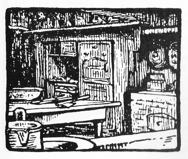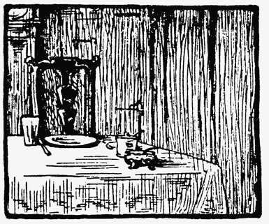
とはいえ 台所の テーブルには したくが してあり、 ぞっとします。 何も 入っていない 青の やなぎもようの 大きな パイざら、 切り分け用の ナイフと フォーク、 それに ほうちょうまで。
そのおくのほう、 テーブルの はしにだけ テーブルクロスが 広げてあって、 そこに 取りざらと タンブラー、 ナイフと フォーク、 しお入れに からしと イスが あり ―― つまるところ だれかさんの 夕ごはんの したくなのでした。
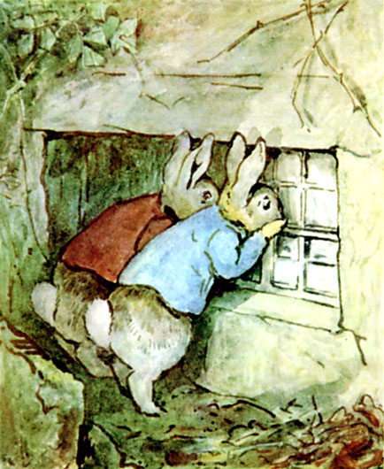
ひとっこひとり すがたが なく、 子ウサギも いません。 台所は もぬけのからで しーん。 時計も とまっています。 ピーターと ベンジャミンは まどに はなを こすりつけ、 うすくらがりに 目を こらしました。
そのあと ふたりは 岩を ぐるり、 おうちの うら手へ 回ります。 そこは じめじめ におうところ、 トゲや イバラが びっしり。
ウサギたちは がたがた ふるえました。
「あああ かわいそうに 子どもたち！ こんな おそろしい 場所に！ もう あいつらの 顔を 見ることは かなわないのかよ！」と ためいきまじりの ベンジャミン。
ねどこの まどに しのびよる ふたり。 台所に おなじく しっかり 戸じまり。 ところが こちらの まどには つい いましがた 開けられた あとが。 はらわれた クモのすに、 つけられたばかりの きたない 足あと。
へやのなかは まっくらなので、 はじめは 何も わかりません。 ただ 物音が 耳に 入って ―― ゆっくり きっちり くりかえされる ぐーぐーという 太い いびき。 ふたりの 目が やみにも なれてくると、 見えてきたのは きつねめさんの ベッドで もうふに くるまり ねむっている だれかさん。 ――「くつを はいたまま ベッドに 入ってる」と 耳うちする ピーター。
ベンジャミンは いても たっても いられなくなり ピーターを まどから 引きはがします。
あなぐまトミーの いびきが きつねめさんの ベッドから ぐーぐーと きっちり つづくだけ。 子どもたちは ちっとも 見えません。
日が くれました。 そろそろ フクロウが ほーほー 言い出す 森には、 せめて うめてくれれば いいような ぶきみな ものが ごろごろしています。 ウサギの ほねとか しゃれこうべとか ひよこの 足とか ほかにも ぞっとするものばっかり。 みの毛も よだつ ところで まっくらでした。
おうちの おもてに もどる ふたり。 あらゆる手を つくして なんとか 台所の まどの かけ金を 外そうとしました。 まどわくの すきまに さびた くぎを おしこもうと するのですが、 こう まっくらでは どうにも うまく いきません。
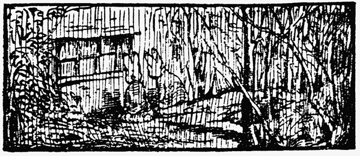
ふたりは まどの前で よりそい こしかけ ひそひそ話。
３０分も すると 森の上にも 月が のぼりました。 さえざえとした まんまる お月さま、 おうちの やねにも 岩場にも 台所の まどにも 光が さします。 なのに なのに、 子ウサギの すがたは まったく 見えません。

月明かりで きらめく 切り分けナイフや パイざら、 そして よごれた ゆかの おくに むかって 光の道が できていました。
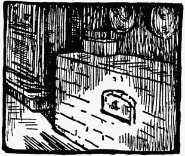
そこで 明るみに 出たのは 火元のそば かべぞいの 小さな とびらです ―― 小さな くろがねの とびらが ついていたのは レンガで できた 古いかたの オーヴンで、 それは まきを もやして つかうものでした。
そして ほどなく ピーターと ベンジャミンは ふたりして はっとします。 まどを ゆするたびに いつも むこうにある その小さな とびらから がたがたと へんじが あるのでした。 子どもたちは 生きている、 オーヴンに とじこめられているのです！
あれだけ ベンジャミンが はしゃいだのに あなぐまトミーが 起きなかったのは あくうんが 強かったとしか 言えません。 きつねめさんの ベッドから きこえる ぶっとい いびきは そのままでした。
とはいえ 見つけても まだまだ あんしんは できません。 ふたりには まどが あけられないのです。 子どもたちも ぶじとはいえ 子ウサギでは 自力で 出るのも ままなりません。 まだ はいはいも ろくに できない 年なのですから。
ひとしきり ひそひそ話を したあとで ピーターと ベンジャミンは 地下に 穴を 通すことにしました。 土手を １、２メートル 下がったところから ほりはじめます。 おうちの地下 岩のあいだを ぬっていけば うまくいくのではとの 考えでした。 台所の 下は きたなすぎるので 土の じめんなのか 石の ゆかなのかは わかりませんが。
何時間も ほりまくる ふたり。 石のせいで まっすぐ 穴は 通せませんが 夜明けまでには 台所の ゆか下まで たどりつけました。 ベンジャミンは あおむけになって 上を 引っかきます。 ピーターは つめが ぼろぼろでしたので、 穴の外で 足を つかって 土を かき出していました。 つと 声を はります、 朝だ ―― 日の出だ、 と。 さらに カケスが 下の森で さわがしい、 とも。 ばにばにベンジャミンは 耳から 土を はらいつつ まっくらな 穴から 出てきまして。 手で 顔を ぬぐいます。 こくいっこくと あたたかくなる お日さまの 光が おかの てっぺんを てらしていました。 谷ぞこには いちめん かすみが 広がり、 木のてっぺんが きらきら かがやいて 見えます。
かすみを かむった 野原から 今ひとたびの カケスの けたたましい なき声、 つづいて キツネの こーんという 遠ぼえ。
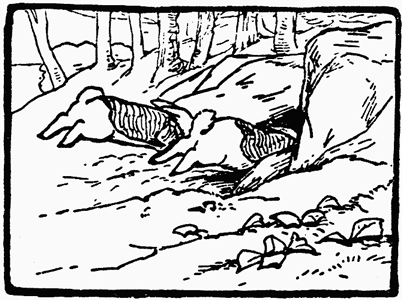
そうなると ふたりして あわてふためく このウサギたち。 いちばん やってはいけないことを しでかしてしまいます。 なんと ほったばかりの みじかい ぬけ穴に とびこんでしまい、 きつねめさんの 台所の ゆか下、 穴のおくに みを ひそめたのでした。
おうし土手へと むかう きつねめさん、 しかも きげんは さいあくです。 まず おさらを わってしまって いらっと 来ました。 まあ 自分のせいなのですが なにしろ せとものの おさらで、 きつねめヴィクスンおばあちゃんが くれた ディナーセットは もう これしか のこっていなかったのです。 それに 小虫も いけません。 キジの メスも 取りにがしました。 すには ほんの５つ たまごが ありましたが、 そのうち ２つが くさっておりまして。 きつねめさんには さんざんな 夜でした。
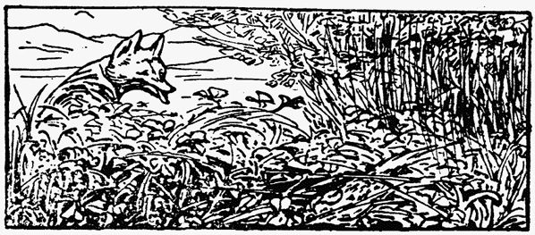
へそを まげたときには 引っこしに かぎります。 ひとまず ずんぎりやなぎに 行ってみたものの、 じめじめしていたばかりか カワウソたちが 近くに 魚の しがいを ほったらかしに していて。 きつねめさん、 自分でない やつが のこしものを するのは ゆるせません。

つぎに おかへの 道を 行ったら 行ったで、 見れば アナグマの 通ったことが はっきり わかるので 気分は どうにも よくなりません。 あなぐまトミーほど コケを 根こそぎ むちゃくちゃにする やつは ほかに いないのです。
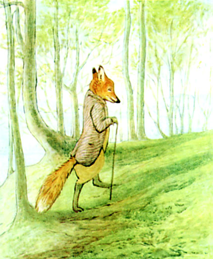
きつねめさんは つえで じめんを ぺしぺし いらいら。 あなぐまトミーの むかった先に あてが あるからです。 しつこく ついてくる カケスにも ますます はらが 立ってきました。 そいつは 木々を つたっては いちいち 声を かぎりに あたりの ウサギたちに ネコか キツネが やぶに やってきたぞ 気をつけろと 言うのです。 いちどなんて 頭の上に とんできて 聞こえよがしに するものですから、 きつねめさんも じかに どなりつけたくらいで。
自分の おうちに そろり 近づきながら にぎりしめるのは さびた 大きな かぎ。 ふんと ならした はなに、 さかだつ ひげ。
おうちは ちゃんと とじまりされていましたが、 どうせ だれかが いると ふんでいました。 さびた かぎを かぎ穴に 入れて回すと、 その音が ゆか下の ウサギたちにも 聞こえます。 きつねめさんは そうろっと ドアを あけて なかへ 入りました。
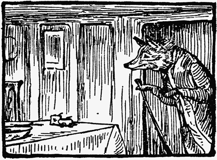
さて きつねめさんの 台所、 きつねめさんは まのあたり、 それで きつねめさんは かんかんです。 なにせ きつねめさんの イスに きつねめさんの パイざら、 ナイフに フォーク、 からしに しおのびん、 さらに 戸だなに たたんで しまってあったはずの テーブルクロスまでが 出ていました ―― 夜ごはん（なり 朝ごはんなりの） したく というわけで ―― あの むかつく あなぐまトミーの しわざに ちがいありません。
持ちこまれたばかりの 土の かおり、 きたない アナグマの くささの おかげで、 さいわい ウサギの においは ごまかせました。
そのかわり きつねめさんの 気を ひいたのが 物音、 自分の ねどこから 聞こえてくる ゆっくり きっちり くりかえされる ぐーぐーという 太い いびきです。
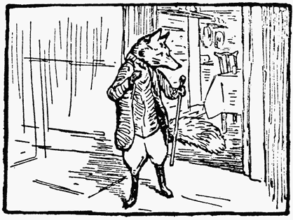
半びらきの ドアの かげ、 ちょうつがいの すきまから ねどこを のぞきました。 そのあと せを むけて あわてて おうちの外へ 出て行きます。 もう かんかんで ひげは さか立ち、 うわぎの えりも ぴんぴんでした。
それから ２０分のあいだ きつねめさんは、 おうちに こっそり 入る あわてて 出るを くりかえしで。 しだいに 出入りは はげしくなり ―― ねどこの へやにも 立ち入ります。 外に いるときには はら立ちまぎれに じめんを 引っかきました。 ところが なかでは ―― あなぐまトミーの はぐきが きついと 顔を そむけるのです。
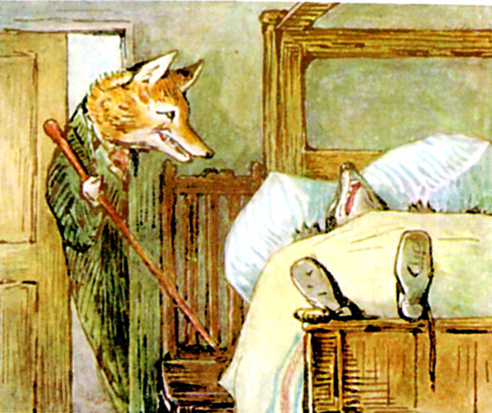
口を あんぐり あけて あおむけに ねそべって、 口のはしが 耳に とどくくらいの にやけ顔。 気もちよさげに きっちり いびき。 ただし 片目が 半びらき。
きつねめさんは ねどこの へやを 出たり入ったり。 つえを 持ってくること ２回、 石炭の 入った バケツを 持ちこむこと １回。 そのあと 考えなおして、 ぜんぶ 片づけたり。
石炭入れを もどして 帰ってくると あなぐまトミーの ねぞうが ちょっと 横むきに なっていました。 それでいて ねむりは なお ぐっすり？ ところが こいつは ただの どうしようもない なまけもの、 きつねめさんなんて おそるるに たらず、 だらだら 気持ちよく ねていたい その一心で、 うごかないだけなのです。
あらためて ねどこの へやに しのびこむ きつねめさん、 手には ものほし用の ロープが。 ふと 立ちどまると あなぐまトミーの ようすを うかがって、 いびきを しっかり たしかめます。 いびきは うるさいのですが へんなところは ありません。
きつねめさんは ベッドに せを むけ、 まどの かけ金を 外しました。 きーっという 音で ぎくっと ふりかえります。 あなぐまトミーは 片目を あけていましたが ―― あわてて とじました。 いびきは そのまま。

なにやら きょどうふしんな きつねめさん （なにぶん まどと ドアに はさまれたところに ベッドが あったので）。 ちょこっとだけ まどを あけて そこから ものほし用 ロープの 大半を 外へ おしだします。 手元に のこったのは ロープの はしっこ、 フックが ついていました。 ねんいりに いびきを かく あなぐまトミー。
立ちどまって しばらく 目を むけてから ねどこを また あとにする きつねめさん。
両目を あけた あなぐまトミーは ロープを みとめて にやり。 まどの外で 物音が しました。 あわてて 目を とじる あなぐまトミー。
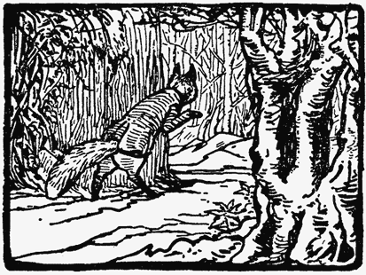
おもての ドアから 出た きつねめさんが おうちの うらに 回ります。 道すがら ウサギのぬけ穴に はまってしまって。 なかに いると ばれていたら、 がっと 引きずり出されるところです。
しかし ぬけ穴を つきやぶった 足は、 すんでのところで あなうさピーターと ベンジャミンの 頭を 外します。 そして さいわい その穴も あなぐまトミーの しわざだと 思ってくれたみたいで。
まどから ぐるぐる 出ている ロープを 取り上げ、 しばらく 聞き耳を 立ててから 木に ロープを くくりつけます。
それを 片目で おう あなぐまトミー。 まどごしながら 何が なんだか。
きつめねさんは 大きな バケツ いっぱいに ずっしり 水を くんできて、 ふらつきながらも かかえたまま 台所を 通って ねどこへ。
せっせと いびきに はげむ あなぐまトミー、 はなも ちょっと ずずずずず。
きつねめさんは ベッドのわきに バケツを おろし、 フックの ついた ロープの はしを ひろいあげると ―― まを おいて あなぐまトミーを みやります。 いびきは もはや すさまじいものでしたが、 口のはしは それほど 上がっていません。
ベッドの 頭がわに よせてある イスに おそるおそる のぼる きつねめさん。 その足が あなぐまトミーの はぐき 近くで きわどくて。
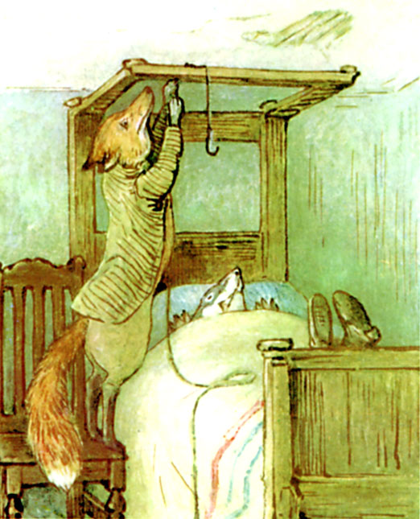
ベッドの てっぺんには 日よけを つるしておく でっぱりが あるのですが、 そこへ フックつきの ロープの はしを のばして 引っかけました。（きつねめさんの 日よけそのものは るすちゅうなので たたんで しまわれています。 かけぶとんも おなじ。 だから あなぐまトミーは もうふだけなのです。）ぐらつく イスの上に たちながら きつねめさんは じろりと 見下ろして。 じゅくすいコンテストが あれば ほんと いっとうしょう まちがいなし！
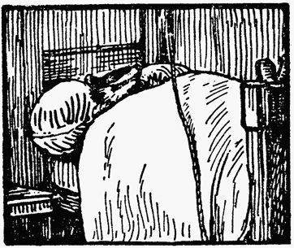
何が あっても 起きない ごようす ―― ベッドの上で ロープが ぺろんぺろん しているのに。
イスから あぶなげなく おりた きつねめさん、 こんどは 水入り バケツを 手にして 上がろうとします。 フックから つるせば あなぐまトミーの 頭上で バケツが ぶらんぶらん、 まどごしに ひもで あやつると いっちょ シャワーの できあがり というわけです。
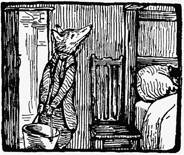
ところが もともと 足が 細かったために（すな色の いじわるひげは ありましたが）―― 重たいものを フックや ロープの 高さにまでは とても 持ち上げられません。 あとちょっとで ひっくりかえりそうに なったくらいで。
すさまじさを ましていく いびき。 あなぐまトミーの うしろ足が もうふのなかで つってしまったのですが、 それでも 何ごとも ないかのように ねむりつづけます。
ひとまず イスから おりる きつねめさんと バケツ。 ひとしきり 考えたあと 水を せんめんきや 水さしに うつし入れます。 からの バケツなら そこまで 重たくは ないですし。 ふらつきながら あなぐまトミーの 頭の上に つるしました。 まさか ここまでして 起きない やつなんて いませんよ！ きつねめさんは イスを のぼったり おりたり おりたり のぼったり。
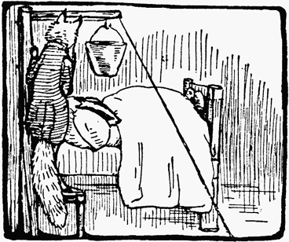
バケツ１ぱい分の 水を 上まで はこぶのは １どでは むりですから、 ミルクピッチャーを 持ち出して ちょっとずつ すくい上げながら 数リットルの 水を バケツに うつしていきます。 水が たまっていくに つれて バケツが ふり子のように ゆーらゆら。 たまに 水が はねて こぼれたり。 なのに あなぐまトミーは みだれなく いびきを かきながら ぴくりとも しません ―― 片目を のぞいては。
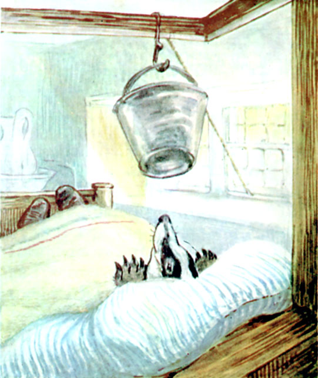
きつねめさんは とうとう 手はずを ととのえました。 バケツには 水が なみなみ、 ロープも ベッドの上から ぴーんと はられ、 まど下を ぬけて 外の 木まで のびています。
「これで わたくしの ねどこも しっちゃかめっちゃかですねえ。 大そうじでも しませんと あのベッドでは ねむることも かないませんか。」と つぶやく きつねめさん。
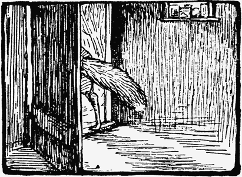
さいごに きつねめさんは あなぐまに ながし目して さっと ねどこを あとにします。 外へ 出ると おもてに 戸じまり。 ぬけ穴の ウサギたちにも、 上から 足音が 聞こえてきます。
うらに かけ足で まわって ロープを ほどくつもりでした。 そうすれば あなぐまトミーの 上に 水の 入った バケツを おとせるのです ――
「ねざめに しこたま どっきりさせて さしあげます。」
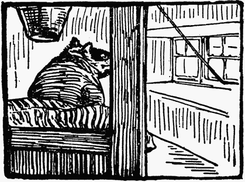
しかし あいてが 出てすぐ、 とっさに 体を 起こす あなぐまトミー。 きつねめさんの ガウンを 細長く 丸めて、 みがわりに 水入りの バケツの下 ベッドに つっこんで、 自分も ねどこを あとにします ―― どこまでも にやけ顔で。
台所に 入って やかんを 火に かけ おゆを 作ります。 今のところ ここで 手間かけて 子うさぎたちを にるつもりでは ないようで。
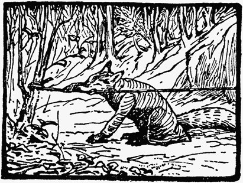
木のところに たどりついた きつねめさんは はっとします。 重みで ぴーんと なっていたために むすび目が きつく しまりすぎて ほどくのが むりで。 はで かみきるはめに なりました。 ２０分いじょうは かんだでしょうか。 ようやく ロープが ぶちん、 でも いきなり ぐいっと 引っぱられたので はぐきもろとも 外れそうなくらいに のけぞって そのまま はねとばされてしまいました。
おうちのなかでは どがしゃ ばちゃーん、 バケツの ごろごろ ころがる 音。
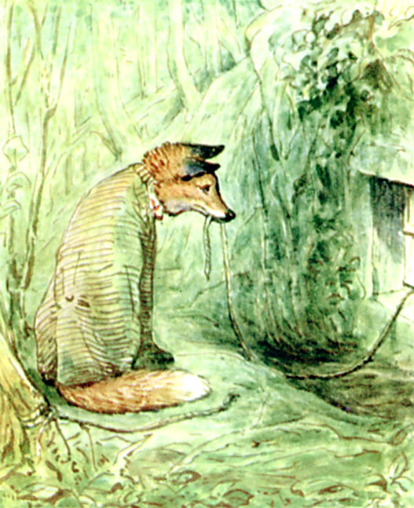
でも、 ぎゃーという 声が ありません。 はてなの きつねめさん。 じっとしたまま しっかり 聞き耳を 立てます。 そのあと まどに 近よって なかを のぞきました。 水が ベッドから ぴたぴた、 バケツは すみに ころがっています。
ベッドの どまんなか もうふの なかには 何かしらが ぐっしょり ―― まんなかが へっこんでいるので そこへ（というか ぽんぽんに？） バケツは 大当たり。 頭も しめった もうふに つつまれて、 いびきも もはや ありません。
けはいも なく、 するのは ぽたぽた ぴたぴた しきぶとんから したたる しずくの 音だけ。
半時間ほど ようすを うかがいました。 やがて 目が きらっ。
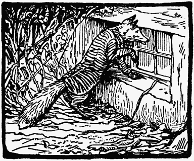
もう いても たっても いられなくなり まどを がんがん たたきます。 それでも ベッドの なかみは うごきません。
しめしめ ―― これで きまり ―― はたして ねらった いじょうの できばえです。 かわいそうに バケツを くらった あなぐまトミーは うちどころ わるく おなくなりに！
「やっこさんは ご自分で ほった あの穴に うめてさしあげましょう。 マットレスも おもてに 出して 虫干しですね。」と きつねめさん。
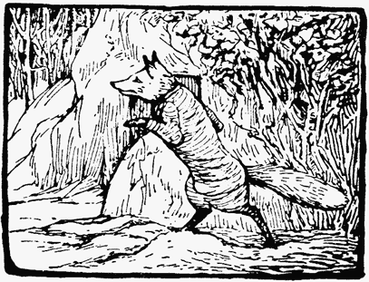
「テーブルクロスは あらって しばふに ひろげて 天日ぼしです。 もうふは つるして 風ざらし。 それから ベッドは かんぜんしょうどく、 あんかと ゆたんぽで あたため かわかすのです。
どろどろ石けんに おがくず石けん 色々 いりますねえ。 じゅうそうと たわしも。 それから ぼう虫ざい、 におい消しの フェノールもです。 よう しょうどく。 ああ イオウを たく はめに なるやも。」
かけ足で おうちを 回って 台所から ショベルを 持ち出します ――「まずは おはかを こしらえましょう ―― そのあと やっこさんを もうふに くるんだまま 引きずりましてね ……」
と ドアを あけますと ……
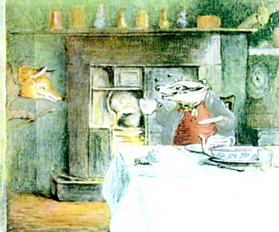
あなぐまトミーが きつねめさんの 台所で せきに ついて きつねめさんの ティーポットから きつねめささんの ティーカップへ お茶を そそいでいるのです。 ぬれていないばかりか にやにやしながら あつあつの お茶が 入った カップを そのまま きつねめさんに なげつけてきました。
とっさに きつねめさんも あなぐまトミーに おどりかかり、 あなぐまトミーは そのきつねめさんを カップの はへんが ちらばるなか むかえうちます。 台所じゅうを ぶたいに 大らんとう。 ゆか下の ウサギたちからすれば、 家具が ひっくりかえるたび ゆかが ぬけると 思えるくらい はげしい 音でした。
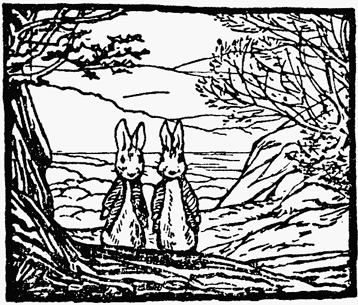
ふたりは ぬけ穴から こっそり 出ると、 岩場のうら 木かげのあたりで こわごわながら うかがいます。
おうちのなかは ものすごい 大さわぎ。 オーヴンのなかの 子ウサギたちも さすがに 目を さまして ぶるぶる。 とじこめられていて ちょうど さいわいかもしれません。
台所は テーブルを のぞいて 何もかもが めちゃくちゃ。

こわれに こわれて のこったのは 火元の上の たなと 下の さくくらい。 食器なんかは こなごなに くだけてしまいました。
イスは みんな ばきばき、 まども われて、 時計も がしゃんと たおれていて、 あたりには きつねめさんの すな色の おひげも ちらほら。
つぼも みんな 火元の上の たなから おっこちて、 缶の 入れ物も せいりだなから すってんころりん。 火に かけてあった やかんも 外れまして。 あなぐまトミーの 片足が ラズベリージャムの びんに はまります。
そして やかんから こぼれた ちんちんの おゆが きつねめさんの しっぽに。
やかんが たおれたが さいわい、 にんまり顔を くずさないまま あなぐまトミーは 上を とりました。 そして きつねめさんを 丸太のように ごろごろ ころがして おもてへ 出します。
 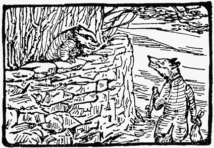
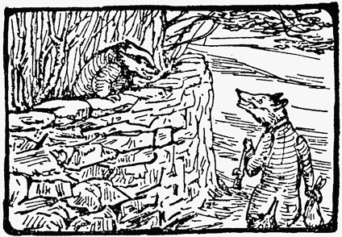こうなると うなり合い かみつき合いの げんばは 外に なりまして、 ふたりは 土手を ころがり 岩場に ぶつかりながら、 丘を 下に 下にと むかっていった しだい。 あなぐまトミーと きつねめさんは おたがいのことが とことんまで 大きらいのようですね。
じゃまものが いなくなり ただちに あなうさピーターと ばにばにベンジャミンが 木かげから 出てきます。
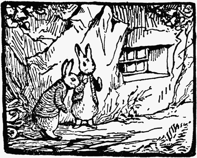
「今しか ない！ つっこめ、 さあ ベンジャミン！ とびこんで たすけだすんだ！ そのあいだ ドアを 見はってるから！」
ところが おそれを なす ベンジャミン ――
「ぁああぁ、 やつら もどってくる！」
「ないよ、 来ないって。」
「来るって！」
「いいかげんに しろよ！ たぶん あいつら 岩場を おっこちたんだ。」
それでも ベンジャミンは まごまご、 ピーターは ひたすら せっつきます ――
「いそげって、 だいじょうぶだって。 オーヴンの とびらを しめておけば、 なあ ベンジャミン、 そうすれば いなくなっても 気づかれないから。」
入ってみると きつねめさんの 台所は そりゃあもう さんざんな ありさまでした！
さて ところ かわって ウサギ穴、 こちらでも あれこれ くすぶっております。
フロプシーと ぴょんぴょんじいさんは ばんごはんの ときにも 口げんか、 そのあと 夜も ねむれず、 朝ごはんのときに また 口げんか。 たしかに ウサギ穴へ つれこんだことは ぴょんぴょんじいさん もう いいわけも できません。 その代わり フロプシーが といつめようと とがめようと いっさい 耳を かさず。 気まずい 時間だけが すぎていきます。
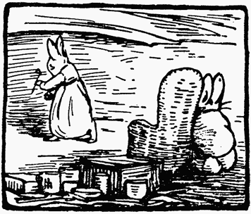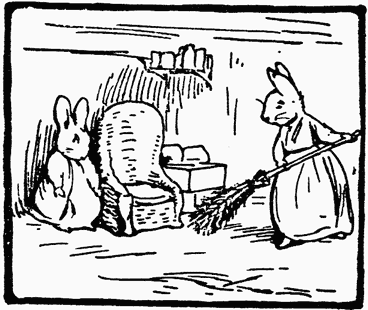
すっかり すねた ぴょんぴょんじいさんは イスを たてにして すみっこで ちぢこまっていました。 パイプを 取り上げて たばこを かくす フロプシー。 少しでも 気を ちらそうと ずっと せいりせいとん 大そうじを つづけていたのです。 それが ちょうど 終わったので ぴょんぴょんじいさんは つぎは 何だと 出方を おずおず うかがっていました。
きつねめさんの 台所に もどると、 めちゃくちゃななかを ばにばにベンジャミンは 何とか かきわけて 気を もみもみ ちりほこりに まみれながらも オーヴンに たどりつきます。 オーヴンの とびらを あけると なかを 手さぐり、 あたたかいものが じたばたしているのが わかりました。 そうろっと かかえあげて あなうさピーターのところに もどります。
「まにあった！ にげられる？ もう かくれよう！ なあ ピーター！」
耳を ぴんと 立てる ピーター。 遠くの 森で あらそう 物音が えんえん こだましています。
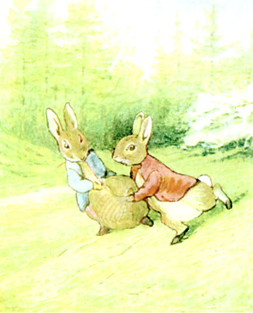
それから ５分も すると ふたりして いきを 切らしながらも おうし土手を かけおりる ウサギたち、 ふくろを なかば 引きずるように かかえていて 時には 草に どしんどしんと 当たることも。 ともあれ ぶじに おうちに たどりついて ウサギ穴に とびこみます。
たいそう ほっとする ぴょんぴょんじいさんに たいそう よろこぶ フロプシー、 ピーターと ベンジャミンが やったぞと 子どもたちを つれ帰ってきました。 ちょっと くらくら でも はらぺこな 子ウサギたちは ごはんを もらって ベッドに 入れられます。 すると たちまち もとどおり。
そして 新品の 長パイプと つみたての ウサギたばこの 葉っぱが ぴょんぴょんじいさんに おくられます。 いったんは えんりょされましたが 受け取られました。
ぴょんぴょんじいさんも おとがめなしと いうことで、 みんなで お食事。 そのときに ピーターと ベンジャミンが いきさつを 語るのですが ―― あなぐまトミーと きつねめさんの たたかいの ゆくすえは あわてて 帰ってきたので わからずじまいでした。
（おしまい）